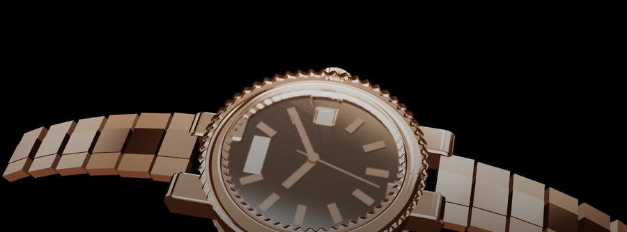
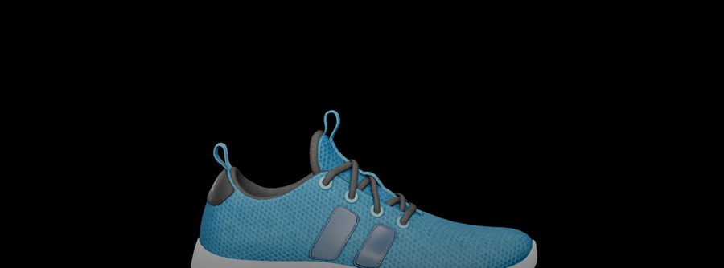

四個精品產品頁。滑動頁面時，鏡頭繞著產品旋轉，接著它會沿各零件的軸線逐層拆開，旁邊浮出技術製圖式的標註。全部是瀏覽器裡的即時 3D 算圖 —— 不是影片，也不是圖片序列。

錶鏡、錶圈、面盤、機芯、自動盤、錶殼、底蓋逐層分離。機芯內部做到珍珠紋、日內瓦條紋、倒角拋光邊、藍鋼螺絲、金座紅寶石與藍鋼游絲。
金蓋、黃銅噴頭、吸管依序離開瓶身，琥珀色酒液柱整根浮出瓶外。瓶身是中空車削件，玻璃有真實厚度可以折射。
羊皮耳墊、金屬濾網、鈹振膜單體、銑削鋁障板沿耳罩軸線左右鏡射散開，頭帶與支架往上浮離。

鞋帶、鞋口、鞋面、中底、大底五層分離。這一頁載入的是真實 3D 模型檔 —— 有機造型不適合程式生成，而這正是客戶交給你產品檔案時的實際流程。
?t=3.5 可凍結在任一秒，用來逐格輸出影片。